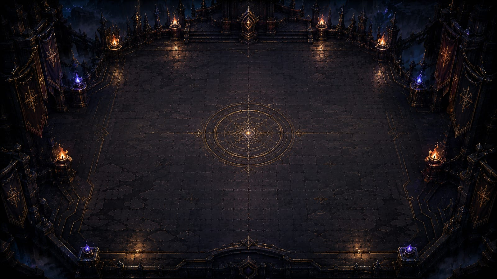

Passo 1
Escolha seu Domador
Oficina arcana
Construção de Deck
Passos 2 e 3
Escolha Pactos e Primordial
Arquivo dos pactos
Coleção
Cartas Disponíveis
O protótipo contém Domadores visuais, Pactos livres, Reinos, Primordiais e decks compactos de Magias, Equipamentos e Eventos.
Preferências
Configurações
Áudio e opções avançadas ficam preparados para quando houver assets próprios no projeto.
Crônicas
Créditos
Pacto dos Lendários
Protótipo alpha local com arte de cartas e cenários fornecidos pelo projeto. Interface refeita com foco em clareza, fantasia medieval e sensação de card game profissional.
Regras base
Como Jogar
- Cada jogador escolhe 1 Domador, 3 Pactos livres, 1 slot de Reino e 1 Pacto Primordial bloqueado.
- O Pacto do meio é o Pacto Ativo: ele pode atacar, mas não usa habilidades ativas.
- Os Pactos laterais ficam no banco: não atacam, mas podem usar 1 habilidade por turno.
- Uma vez por turno, você pode trocar o Pacto Ativo com um Pacto do banco.
- Mana começa em 1, aumenta +1 de Mana máxima por turno, restaura no início do turno e vai até 10.
- Você vence ao reduzir a Vida do Domador inimigo a 0 ou destruir os 3 Pactos inimigos.
- Dê dois cliques em qualquer carta para abrir os detalhes completos no modal central.

Log da Partida
Regras Rápidas
- O Pacto central é o Ativo e é o único que ataca.
- Pactos laterais usam habilidades, uma vez por turno cada.
- Troque o Pacto Ativo uma vez por turno.
- Primordial fica bloqueado até você ter 10 Mana.
- Vitória: Domador inimigo a 0 Vida ou 3 Pactos destruídos.
Fim da partida